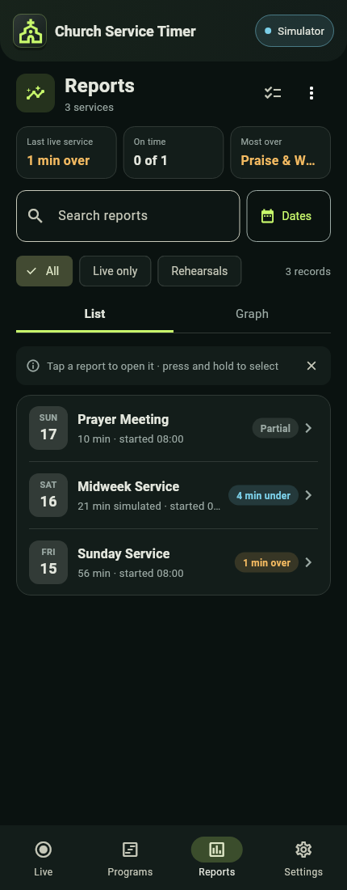
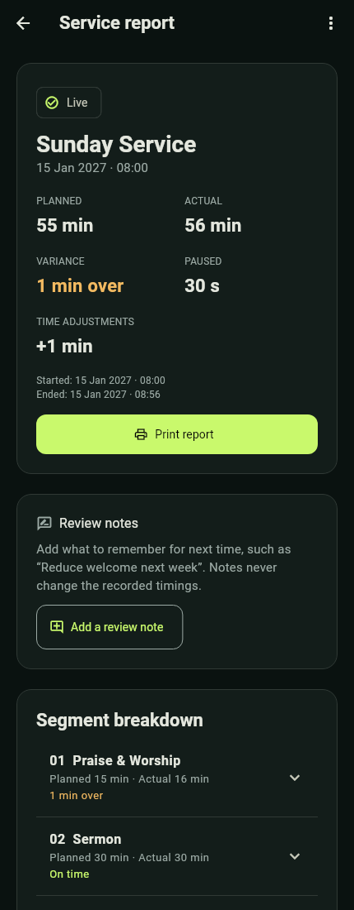
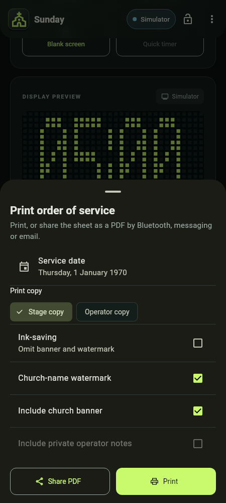

Reports lists completed services as rows with a date badge, the length and start time, and an outcome chip: On time, N min over (amber) or N min under (blue), or "Partial" for an incomplete record. Rehearsals and saved Quick timers are labelled so they are not confused with real service timing. A finished service or segment is always on time, over or under in Reports; Live keeps "ahead" and "behind" for a service still running.


Above the list:
| Part | What it shows |
|---|---|
| Last live service tile | How the latest live service compared with its plan, for example "1 min over". With several services it reads "Last N live services" and adds "avg". It leaves rehearsals out. |
| On time tile | How many of those services finished on time, for example "0 of 1". |
| Most over tile | The segment that ran over most. |
| Search and Dates | Find a service by name, or limit the date range. |
| Filters | All, Live only, Rehearsals, and Quick timers once one has been saved. |
| List / Graph | The Graph starts with bars of minutes over or under plan for the last few services, each date under its own bar. Tap a bar to see that service, for example "Ran 21 min · planned 25 min" with "4 min under", and Open report. Planned-vs-actual rows follow below. |
Open a row for its Service report: planned, actual, variance, paused time and time adjustments, then Print report at the foot of that summary card, Review notes, the Segment breakdown and the Activity timeline.


Read actual duration alongside planned and paused time. Activity records can help explain when an operator adjusted time, changed segment, answered a stage request or experienced a send failure; they do not prove what a person on stage saw. "Partial or uncertain timing" means the record should be reviewed before comparing it.
Review notes are an after-service reflection, such as “Reduce welcome next week”, kept apart from the recorded timings. Use Add a review note (or Edit). The note shows as "Last time" when the same program is next loaded into Ready, and is optional when exporting or printing.
Export and share. A report's ⋮ menu has Export report CSV, Export report JSON and Delete report. To handle several, press and hold a row to select, then use Share (Bluetooth, messaging or email) or Export: pick a format (report file, spreadsheet or printable PDF) and whether to include review notes. JSON keeps richer report details. Reports › ⋮ › Export all reports covers every saved report. Deleting selected reports offers a 10-second Undo; Delete report and Delete all reports cannot be undone, so export first if you need a permanent copy.
Print report is on a report; Print order of service is on program details and on Live (the print icon in the Service rundown header). From a report, choose the Document: Service report or Service rundown. New records preserve the program snapshot, service date and church name used for that service, so editing today's program does not rewrite old speakers or notes. Older records may explicitly lack historical details.
Print choices open as a sheet:
| Option | Meaning |
|---|---|
| Stage copy | Excludes private notes. This is the appropriate starting point for distribution beyond the operator team. |
| Operator copy | Enables private notes; you may still untick Include private operator notes before printing. Review the content before sharing. |
| Ink-saving | Omits banner and watermark for this output. It is remembered from your last print. |
| Church-name watermark | A faint bold diagonal church name, used when a name exists. Ticking it turns Ink-saving off. |
| Include church banner | Uses the current configured banner; a historical service snapshot does not freeze the old image. Ticking it turns Ink-saving off. |
| Include review notes | Offered for a report that has one. |


The PDF repeats table headings and reserves footer space on every page for Church Service Timer · I-Proton and Page N of M. Service date and the document's preparation date/time/timezone are separate. Rundowns omit Planned start; historical reports retain useful planned/actual/paused columns.
Choose Print to continue to Android's print screen and select a printer or Save as PDF, or Share PDF to send the sheet directly. Review the destination and final pages. Printing a program before it has run offers a service date. A PDF is an exported copy; later app changes do not update a file already shared.